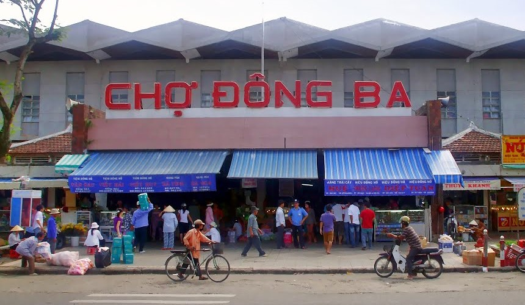
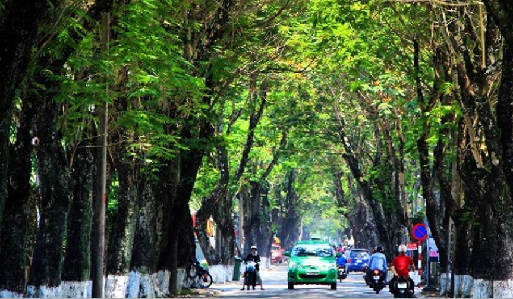
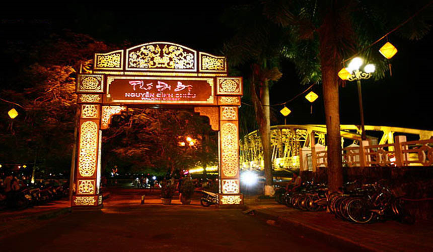
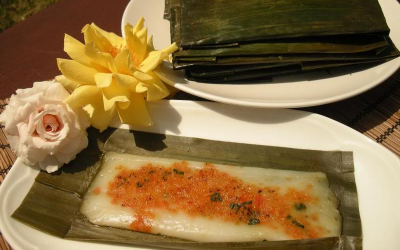

Khám phá Huế-Kinh đô xưa, trải nghiệm mới
Hành trình khám phá Huế mộng mơ luôn quyến rũ con người ta với vẻ đẹp trầm mặc của đất cố đô và cái ngọt ngào của người Miền Trung thật thà, chân chất. Không thể tả hết những gì mà mảnh đất cổ kính rêu phong này có thể mang lại bởi lẽ mỗi một người lại có cảm nhận riêng về vẻ đẹp của Huế.
Danh mục nội dung:
- Khám phá Huế, những góc phố bình yên
- Khám phá các danh lam thắng cảnh nổi tiếng của đất Huế
- Những trải nghiệm du lịch Huế không nên bỏ qua
- Khám phá Ẩm thực Huế
- Khám phá tâm hồn con người Huế
- Yêu cái thời tiết đặc trưng của Huế
Khám phá Huế, những góc phố bình yên
Có lẽ sẽ quá là khập khiễng nếu như đem cái nhịp sống của Huế mà đi so sánh với những TP bạn khác, bởi đơn giản Huế chậm và buồn theo cách riêng của Huế mà nếu muốn các TP khác cũng không thể tài nào có được. Nhật ký Trịnh Công Sơn tôi nhớ đã từng viết như này: “Đã lâu lắm tôi không ra khỏi nhà để thực hiện những chuyến đi xa. Thế rồi nó trở thành một thói quen. Một thói quen không hiểu là tốt hay xấu.” Thế mà cuối cùng tôi cũng trở về xứ sở của tôi, nơi cảm hứng cho những đứa con tinh thần của tôi ra đời. Khi bạn có một xứ sở để trở về hoặc là để thỉnh thoảng trở về, thì bạn còn có hạnh phúc nhiều lắm. Ở đó bạn có một dòng sông, một ngọn núi, kinh thành và bạn tìm lại được những đứa bạn một thời tóc xanh nay đã lốm đốm bạc đầu.
Yên bình, đó là điều mà bất kỳ ai cũng phải thốt lên khi đặt chân đến Huế. Là thành phố du lịch nổi tiếng cả nước nhưng Huế không xô bồ, vội vã như nhiều nơi khác. Những ngôi nhà xưa cũ, con đường rợp bóng cây xanh, dòng sông Hương phẳng lỳ soi bóng cùng vòng quay xe đạp đều đều trên phố mang đến hơi thở chậm rãi cho mảnh đất cố đô.
Tuy nhiên, khác với Hội An, vẻ đẹp bình yên của Huế có pha nét buồn man mác. Đó có thể đến từ những bức tường rêu phong in dấu thời gian giữa lòng thành phố, hay những cơn mưa dai dẳng khơi gợi nỗi nhớ thương trong tâm hồn người lữ khách.
Là thành phố du lịch nổi tiếng cả nước nhưng Huế không xô bồ, vội vã như nhiều nơi khác. Những ngôi nhà xưa cũ, con đường rợp bóng cây xanh, dòng sông Hương phẳng lỳ soi bóng cùng vòng quay xe đạp đều đều trên phố mang đến hơi thở chậm rãi cho mảnh đất cố đô.
Ở Huế dù có đi trên đường nào cũng dễ dàng bắt gặp hình ảnh của những cây cổ thụ rợp bóng mát tạo cảm giác thư giãn và mát mẻ vô cùng. Đường phố ở Huế không quá rộng, nhưng vừa đủ để các bạn có thể vừa thoải mái lang thang vừa ngắm nhìn cây cối, rồi bất giác hít một hơi thật sâu như để lưu giữ lại cái không khí trong lành ấy.
Khám phá các danh lam thắng cảnh nổi tiếng của đất Huế
Đại nội uy nghiêm rộng lớn
Có lẽ không phải vô tình mà vua chúa thời xưa chọn Huế làm kinh đô, bởi ở đây cái khí đất, khí trời hội tụ…
Đến Huế thì đây là địa điểm bạn không thể bỏ qua, bởi chắc chắn bạn sẽ rất tò mò ngai vàng trông như thế nào, điện Thái Hòa rộng lớn ra sao, cung tầng mỹ nữ sắp xếp bao quanh vua như thế nào hihi và nhiều hơn 1 lý do, tôi chắc đinh như thế để thôi thúc bạn mua vé bước chân vào hoàng thành.
Các Lăng tẩm vua chúa
Sẽ là 1 thiếu sót lớn nếu đã đề cập đến Đại nội mà quên đi các đền đài lăng tẩm. Kiến trúc xây dựng cũng như lịch về 1 triều đại, về 1 vị vua sẽ làm bạn muốn đến tham quan ít nhất 1 lăng vua nào đấy. Các lăng tẩm nổi tiếng ở Huế như: Lăng Tự Đức, lăng Minh Mạng, Lăng Gia Long…
Chùa Thiên Mụ – (Linh Mụ)
Đến Huế bạn có thể gọi ngôi chùa cổ kính bên dòng Hương này bằng cả 2 cái tên trên đều được.
Nếu lòng bạn bộn bề với những lo toan cuộc sống, nếu lòng bạn ngột ngạt với nhịp sống hối hả nơi bạn đang sống, hãy đến với Huế, đến với Thiên Mụ, đứng ở ở góc chùa tĩnh tâm cầu nguyện, lắng nghe tiếng chuông vọng vào không gian tĩnh lặng, và ngắm sông Hương để nhận ra nó đẹp đến nhường nào, rồi lòng bạn “an yên” biết bao nhiêu. Tin tôi và đến du lịch Huế thử đi…
Sống cùng lịch sử Huế với Chợ Đông Ba

Nếu như ở Hà Nội có chợ Đồng Xuân, Sài Gòn có Chợ Lớn thì Huế có chợ Đông Ba, đến Đông Ba bạn mới cảm nhận được nhịp sống riêng có của người Huế.
Những ngôi trường cổ kính
Gắn liền với thời thơ ấu của các bậc vĩ nhân, và kể cả những biến cố thăng trầm của vùng đất Cố Đô.
Cầu ngói Thanh Toàn
“Ai về cầu ngói Thanh Toàn
Cho em về với một đoàn cho vui.”
Chất xưa dân dã, mộc mạc của cầu ngói Thanh Toàn được tái hiện với vẻ đẹp thanh lịch, dịu dàng mà yên ả tại mảnh đất Huế thơ mộng trước mắt khách du lịch gần xa. Đến đây, du khách không khỏi bàng hoàng trước cây cầu ngói giống y hệt Chùa Cầu nổi tiếng ở Hội An.
Làng thanh trà Thủy Biều
Ở Huế có nhiều cái duy nhất, và Thanh Trà cũng thể, thuộc họ bưởi quả nhỏ nhưng chỉ ở Huế mới trồng được cái loại quả ngon và thanh như thế.
Kim long
“Kim long có gái mỹ miều
Trẫm thương, trẫm nhớ, trẫm liều trẫm đi”
Con gái và rượu Kim Long luôn làm đắm say lòng người. đến Huế và lên Kim Long xem thử bạn có bị say rượu say người thật không nhé?
Phố cổ Bao Vinh
Đã từng là một trong những thương cảng sầm uất của xứ đàng trong. Mặc cho trải qua nhiều biến cố, Phố Cổ Bao Vinh vẫn giữ trong mình những nét riêng của phố thị thời xưa, những ngôi nhà cổ nằm sâu trong một dãy nhà hiện đại, chỉ còn lại 4,5 ngôi nhà nhưng nó không chìm nghỉm…
Làng cổ Phước Tích
Đi từ đầu làng, nằm trên con đường chạy dọc bờ sông là những nhà thờ họ, thánh thất, đình chùa, văn thánh, phía trong là nhà dân. Làng có ba phía giáp với sông, hệ thống bến nước phân bố từ đầu đến cuối làng với tên gọi gắn liền với địa danh, như: bến Hội, bến Cầu, bến Cây thị, bến Cạn, bến Đình, bến Lau, bến Cây bàng…
Cầu Trường Tiền

“Nhịp cầu cong và con đường thẳng
Một đời anh tìm mãi Huế nơi đâu…”
Sông Hương, Núi Ngự

Có lẽ tôi sẽ không viết gì nhiều để khoe với bạn về dòng sông thương, sông nhớ, sông yêu của người Huế chúng tôi, mà tôi sẽ mượn những dòng thơ Thu Bồn viết khi” tạm biệt Huế” và đi… “con sông dùng dằng, con sông không chảy Sông chảy vào lòng – nên Huế rất sâu”
Phá Tam Giang
Đây là một điều tuyệt diệu mà thiên nhiên đã ban tặng cho vùng đất này, một vùng đầm phá mênh mông rộng lớn. sẽ rất là tuyệt nếu bạn đến đây thưởng thức những món hải sản đặc trưng với giá cực kỳ rẻ (lắm lúc bạn sẽ không thể nào ngờ) và sớm mai thức dậy để ngắm bình minh đang nhô lên dần giữa đầm phá mênh mông…. Nghĩ thôi đã thấy thật tuyệt đấy !!
Vịnh đẹp thế giới – Lăng Cô
Thoai thoải những bãi cát trắng, mượt mà màu xanh trong của biển và những ngọn núi cao to đồ sộ bao quanh… tận hưởng cái mát mẻ của biển và thấy Huế cũng thú vị rất nhiều.
Đèo Hải Vân
Con đèo chia cách Đà Nẵng và Huế, bạn có thể chọn qua đèo bằng hầm đường bộ. Nhưng hãy khám phá bằng cách chạy trên những con đường ngoằn nghoèo mà ngắm núi đồi rất rất rất đẹp bạn ạ. Dừng chân ở Hải Vân quan và chụp ảnh cùng bạn bè và người thân để ghi dấu kỷ niệm nhé.
Vườn quốc gia Bạch Mã
Sự đa dạng và phong phú về hệ động, thực vật khiến đây đã trở thành một trong những điểm đến rất được khách du lịch ưa thích. Nếu là người yêu thiên nhiên và thích sự trải nghiệm thì Bạch Mã chính là địa điểm lý tưởng mà bạn không thể bỏ qua khi tới Cố đô Huế.
Đầm chuồn
Hãy đến để khám phá một khoảng không trầm lặng và bình yên, cảm nhận cuộc sống hiền hòa của những người con vùng đầm phá và nếm thử hương vị của bánh tét, và bánh xèo cá kình nhé…
Hãy đến để khám phá một khoảng không trầm lặng và bình yên, cảm nhận cuộc sống hiền hòa của những người con vùng đầm phá và nếm thử hương vị của bánh tét, và bánh xèo cá kình nhé…
Những trải nghiệm du lịch Huế không nên bỏ qua
Yên bình, đó là điều mà bất kỳ ai cũng phải thốt lên khi đặt chân đến Huế. Là thành phố du lịch nổi tiếng cả nước nhưng Huế không xô bồ, vội vã như nhiều nơi khác. Những ngôi nhà xưa cũ, con đường rợp bóng cây xanh, dòng sông Hương phẳng lỳ soi bóng cùng vòng quay xe đạp đều đều trên phố mang đến hơi thở chậm rãi cho mảnh đất cố đô.
Xích lô ngắm kinh thành Huế

Du khách mỗi lần đến Huế thường rất thích thú ngắm Kinh thành, lăng tẩm cổ kính, sông Hương núi Ngự, cuộc sống con người cố đô… trên những chiếc xích lô.
Không cần gì phải vội vã cả, cứ ngồi lên xích lô, từ từ băng qua các cung đường để có dư thời gian mà ngắm nhìn nhé…
Du thuyền trên sông Hương
Xuống thuyền rồng, thả hồn mình ra giữa lòng sông, phiêu theo những câu ca Huế ngân nga… Sự lựa chọn tuyệt vời cho những ai yêu thích cách thưởng thức nghệ thuật thú vị này.
Đến Cố đô Huế, buổi tối đi thuyền trên sông Hương nghe điệu hò, những lời ca Huế nồng nàn cùng giọng điệu Huế ngọt ngào và dễ thương làm say lòng bao du khách.
Tận hưởng những con đường rợp bóng cây xanh

Không ở đâu như Huế, đi bộ dưới tán lá cây xanh, tận hưởng bầu không khí trong lành và nghe kể những câu chuyện về Huế…
Lễ hội Festival Huế
Huế như 1 cô công chúa ngủ trong rừng sâu, và mùa lễ hội đã bừng tỉnh, trở nên sôi động đầy màu sắc, hội nhập cùng bạn bè trong nước và quốc tế.
Hãy đến tham quan Huế vào mùa Festival bạn sẽ cảm nhận về 1 Huế rất khác, rất mới nhưng không bao giờ đổi thay.
Khám phá phố đêm – Phố đi bộ ở Huế

Sự chuyển mình của Huế, có một phố đi bộ Phạm Ngũ Lão náo nhiệt với những quán bar và bữa tiệc ngoài trời. Chính điều này đã khiến du khách thêm yêu và dành sự thương mến cho xứ Huế nhiều hơn cả!
Ngoài ra còn có khu phố đi bộ Nguyễn Đình Chiểu cũng là điểm đến được nhiều bạn trẻ lựa chọn. Không chỉ đơn thuần là nơi bày bán các sản phẩm rẻ tiền phù hợp với giới trẻ, mà nó còn là nơi xả stress hiệu quả đấy… muốn biết ở đó có gì ư ? Hãy thử đến 1 lần nhé !
Khám phá Ẩm thực Huế
Người Huế cầu kì trong chế biến ẩm thực. Với người Huế, nấu món ăn là để thể hiện sự đam mê nghệ thuật. Với quan niệm “ăn” trước hết là “ăn bằng mắt”, nên người phụ nữ Huế rất dụng công trong việc tạo hình các món ăn một cách nghệ thuật, tạo nên sự truyền cảm mạnh mẽ mỗi khi ngồi vào bàn tiệc. Tất cả kinh nghiệm chế biến được truyền dạy từ thế hệ này qua thế hệ khác và ngày càng hoàn thiện hơn. Hãy cùng khám phá ẩm thực Huế nhé !
Huế còn là ‘kinh đô ẩm thực’ làm say lòng khách bốn phương. Các món ăn ở Huế dân dã, bình dị như chính nét đẹp duyên dáng của người miền Trung.
Và cũng vì ảnh hưởng bởi sự quyền quý và uy nghiêm của hoàng tộc, vua chúa mà ẩm thực Huế rất phong phú, tinh tế, đạt giá trị dinh dưỡng và nghệ thuật cao.
Bún bò – bún hến
Nếu đến Huế mà chưa thưởng thức những món này, thì rất tiếc bạn giống như chưa từng đặt chân đến đây vậy… Hiện nay, đi đâu bạn cũng có thể ăn bún bò, bún hến vì nó quá đỗi phổ biến, nhưng chỉ ở Huế bạn mới cảm nhận được đầy đủ vị Huế.
Các món bánh ở Huế

Các món bánh ở Huế đều được làm từ những loại bột rất cơ bản trong nghệ thuật ẩm thực của Việt Nam. Nếu đến Huế mà bạn không nếm thử các loại bánh ở đây thì thực sự là thiếu sót đấy!
Bánh bột lọc là món ăn đại diện cho văn hóa ẩm thực Huế. Món ăn có vỏ dai ngon, nhân tôm đậm vị ai cũng phải thèm. Ảnh: Các món ăn vặt ngon ở Huế. Bạn sẽ cũng thấy rất là thích thú với những đôi quang gánh trên vai những người phụ nữ len lỏi khắp các ngỏ ngách của TP với nhiều loại bánh: bánh bèo, nậm, lọc, gói, bánh khoái, bánh ướt, ít, đúc… và rất nhiều thứ bánh mà chỉ khi bạn đến Huế bạn mới được nếm thử! Hãy chọn những đêm trăng sáng, cùng người thương nhâm nhi tách cà phê nóng cùng 1 món đồ uống rất cung đình như “trà quý phi, trà dũng sỹ…” ngắm trăng nhé. Như cái tên gọi, “tứ phương vô sự “ – An yên lắm… Bạn sẽ gặp một cô gái Huế bất chợt trên đường và hỏi rằng: Huế bây chừ có gì lạ không em? thì lập tức, hoặc tình cờ cô gái ấy sẽ đọc lại hai câu thơ của Bùi Giáng: “Dạ thưa phố Huế bây giờ Ngự Bình vẫn đứng bên bờ sông Hương.” Thật ra tôi mượn câu từ trong nhật ký của chàng trai họ Trịnh là bởi lẽ Huế của Trịnh Công Sơn và Huế của tôi là thế, là trăm năm trước và trăm năm sau không có gì thay đổi. Có chăng yêu Huế là yêu cái thủy chung son sắt không đổi thay mà chỉ nhuốm màu thời gian, vết tích xưa cổ nhưng vẫn giữ nguyên cái thần thái kiên trung. Có lẽ hình ảnh này đã đi vào thơ ca và lòng người nhiều quá rồi thì phải “Nón rất Huế – một đời không phải thế Mặt trời lên từ phía nón em nghiêng…” Nét duyên của người con gái Huế đã thổi hồn vào những tà áo dài bao đời nay. Không biết bao nhà thơ và họa sĩ đã say với tà áo dài tím… Người Huế gần gũi và thân thiện. Người Huế luôn nở nụ cười trên môi khi gặp người khác. Nhưng có lẽ tôi muốn nói đến con gái Huế – phụ nữ Huế nhiều hơn. Bởi con gái Huế với tính cách dịu dàng, dễ thương pha lẫn nét trầm tư, sự kín đáo e ếp, với giọng nói “dạ, thưa” đến say lòng. “học trò xứ Quảng ra thi thấy cô gái Huế chân đi không rời” Điều này bạn sẽ cảm nhận được khi đến Huế, bước vào nhà, ngồi ăn chung 1 mâm cơm gia đình… bạn sẽ hiểu. Thời tiết ở Huế khá thất thường, ngay khi trời nắng du khách vẫn có thể bắt gặp cơn mưa rào bất chợt của Huế mang lại, người ta thường bảo rằng: may mắn lắm mới thấy được cơn mưa rào ở Huế. Vì vậy đến Huế du khách nên chuẩn bị ô (dù) trong hành tình khám phá Huế nhé. Không đem nó so sánh với Hải Phòng, thành phố hoa phượng đỏ. Phượng ở Huế có những nét và không nơi nào có được, sắc đỏ hoa phượng Huế không đậm nhưng nó thăm thắm tình nghĩa. và nhuộm cả 1 vùng ký ức tuổi hoa , mùa hạ, mùa phượng – mùa chia tay. Có lẽ sẽ là thiếu sót nhiều lắm, nếu nhắc đến Huế mà lại quên MƯA. Mưa là đặc trưng, là “đặc sản” của Huế. Buồn lắm, lê thê và rả rich lắm, nhưng thiếu mưa, Huế như mất đi 1 phần nào đó cái hồn của mình. Tôi dừng lại những dòng tự hào về nơi tôi sinh ra và lớn lên khi vừa nói bạn nghe xong Mưa Huế. Còn nhiều hơn thế tôi sẽ kẻ bạn nghe chỉ là – Bởi lẽ, bây giờ ngoài trời Huế vẫn đang mưa, kéo dài và rả rích. Cảm nhận cho hết cái lạnh của cơn gió, cho hết cái buồn mam mác trong từng hạt mưa rơi, mới thấu hết nỗi lòng người Huế, người xa xứ hướng về. Như cái tình yêu dành trọn cho đất Huế – Những con người trẻ luôn tự hào và thương biết mấy cái vùng đất bé nhỏ, nơi thành quách, không gian và cả thời gian được nhuộm bằng những sắc hoa tim tím chiều. Nếu bước chân lang thang tới 1 vùng đất mới nào đó, được hỏi chúng tôi sẽ vẫn luôn tự hào và khẳng định rằng “Tôi – người Huế”. Nhiều hơn thế chúng tôi tự hào về nhiều giá trị vĩnh hằng khác… Có thể bạn sẽ chưa biết về Huế, nhưng bạn sẽ yêu ngay Huế ngay khi bạn tìm về, và trải nghiệm những điều tôi chia sẻ … TÔI CHỈ CHẮC CHẮN CÓ VẬY.Những gánh bánh – “O ơi cho cháu một dĩa bánh”
Thưởng thức cà phê
Khám phá tâm hồn con người Huế
Yêu cái giọng Huế đặc trưng
1.Người Huế không trả lời là “Vâng…” mà chúng tôi nói rằng “DẠ..”
2.Người Huế chúng tôi không hỏi “Tại sao…” mà là “ Vì răng…”
3.Không kêu “Cô” mà là “O”
4.Không “ mắc cỡ” mà là “dị òm…” Không phải là “đẹp ghê” mà là” đẹp dễ sợ…”
Cái chi cũng dễ sợ, thương dễ sợ, yêu dễ sợ mà ghét cũng dễ sợ.
Dạ, Huế em là rứa đó, giọng em là rứa đó, và tụi em có lẽ cũng
làm đắm say lòng người rứa đó…
Nón bài thơ vào những câu ca

Chiếc áo dài tím
“Một chiều lang thang bên dòng Hương Giang
Tôi gặp một tà áo tím nhẹ thấp thoáng trong nắng vương
Màu áo tím sɑo luуến thương, màu áo tím sao vấn vương
Rồi lòng bâng khuâng theo màu áo ấу
Màu áo tím hôm nào tình quуến luуến bɑn đầu
Ϲhập chờn tâm tư màu áo thoáng chiêm bɑo”
Con gái Huế – phụ nữ Huế – người Huế
Nề nếp, gia phong
Yêu cái thời tiết đặc trưng của Huế
Sắc phượng đỏ ngày Huế vào hè
Mưa Huế


{kind=link}
Recent Posts
- Etiam suscipit bibendum Aliquam erat volutpat vVivamus accumsan magna sit amet. Sed vel justo ut sodales nulla. In hac habitasse platea dictumst.
- Aliquam at felis odio Rhoncus purus, in pretium libero ut libero molestie nec lacinia mi fringilla tincidunt eget ante gravid eu vulputate odio.
- @templatemo at scelerisque urna in tellus varius ultricies ante gravid sed eu vulputate.
- Suspendisse enean #FREE tincidunt massa in tellus varius ultricies. Ut eget ante sem.
- Aenean tincidunt massa in tellus varius et. Nullam metus ut diam neque. http://bit.ly/13IwZO
About
Etiam tempus volutpat velit eget egestas. Sed tempor, sapien a tincidunt commodo, ante nisl aliquam tortor, et tempus tellus ante vitae elit. Vivamus eget justo est, ac auctor nibh. Mauris sed pretium turpis. Proin vitae nibh enim, vel blandit massa. Maecenas sit amet elit lectus, id porttitor dignissim lacus.